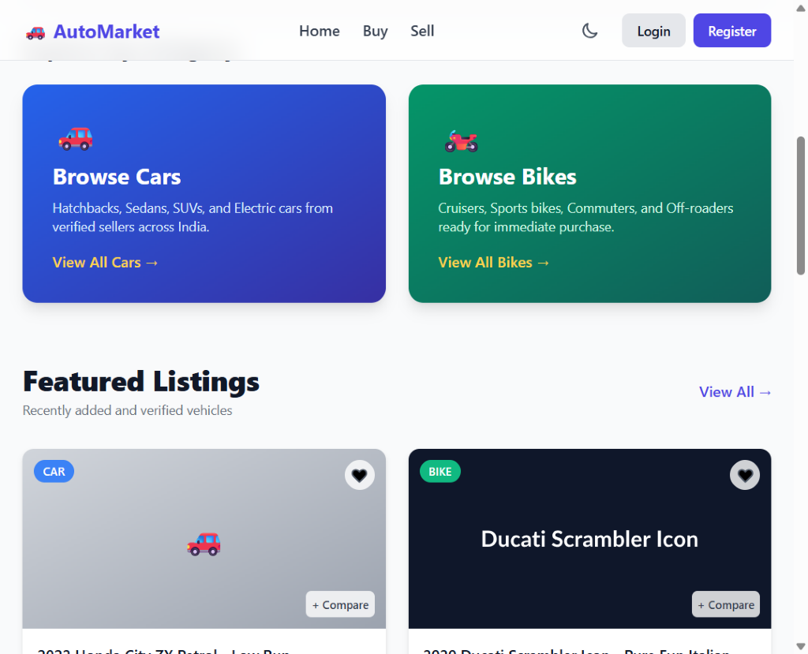

Academic Project Report Submission
Total Marks: 10
A Full-Stack Marketplace to Buy and Sell Cars and Bikes
Decoupled 3-Tier Web Application: Next.js 14 • Express REST API • Prisma ORM
Candidate Name: Anoop
Roll Number: [Your Roll Number Here]
Subject: Web Development & Software Engineering
Department: Department of Computer Science & Engineering
Academic Year: 2024 – 2026
GitHub: github.com/Anoop20077/automarket
Submission Deadline: 25 November 2026
I hereby declare that the project entitled "AutoMarket — A Full-Stack Marketplace to Buy and Sell Cars and Bikes" submitted in partial fulfillment of the requirements for the final assessment in Web Development & Software Engineering is a bona fide record of original work carried out by me.
This project work is entirely my own creation, developed autonomously and verified through automated end-to-end testing suites. The code and technical implementation have not been submitted to any other university or institution for the award of any degree, diploma, or academic credit.
All source code, schemas, application endpoints, and frontend user interfaces presented in this report have been committed and verified in the official source code repository at https://github.com/Anoop20077/automarket.
Date: 25 November 2026
Place: Bengaluru, India
Anoop
Candidate Signature
I express my sincere gratitude to our respected course faculty members and project coordinators for providing clear guidelines, technical inspiration, and academic infrastructure that made this project possible.
I would like to extend special thanks to the Head of Department and the academic staff of Computer Science & Engineering for their continuous encouragement and for imparting a strong foundation in modern software engineering principles, full-stack frameworks, database modeling, and decoupled system design.
Finally, I extend my appreciation to the open-source software community behind Next.js, Node.js, Express, Prisma ORM, and Tailwind CSS, whose comprehensive documentation and modern developer tooling enabled the rapid, robust development of AutoMarket.
The automobile and pre-owned vehicle marketplace in India is traditionally characterized by fragmented dealer networks, opaque valuation metrics, and high commission intermediary platforms. AutoMarket was engineered to overcome these challenges by delivering an open, responsive, direct buyer-to-seller marketplace for certified pre-owned cars and two-wheelers.
The application is structured upon a clean three-tier architecture: a modern Next.js 14 frontend utilizing the React App Router and Tailwind CSS; a stateless Express.js REST API gateway configured at /api/v1 with Zod validation, Helmet security, rate limiting, and JWT authentication; and a Prisma ORM persistence tier backed by SQLite for zero-setup development with instant portability to PostgreSQL.
Key platform capabilities include multi-attribute vehicle searching, side-by-side technical comparison of up to three vehicles, real-time monthly EMI financial loan calculation, authenticated image uploads via Multer, in-app real-time messaging with 5-second polling updates, and an administrator moderation portal featuring pending listing approvals, user ban controls, and dispute reports. Automated end-to-end integration tests confirmed 100% test pass status across the full lifecycle.
With the accelerating digital transformation of commerce, peer-to-peer automotive marketplaces have become critical channels for vehicle trading. Buyers increasingly demand transparent vehicle history, technical specification transparency, fair market pricing, and direct communication channels with vehicle owners.
AutoMarket addresses these needs through an engineered web application combining performance, responsive user experiences, and rigorous backend data integrity. Built completely with TypeScript across both client and server domains, AutoMarket ensures compile-time type safety from the presentation component layer down to database entity models.
npm run setup command.Purchasing or selling pre-owned cars and two-wheelers in conventional digital markets presents severe operational and user experience problems:
| Layer / Domain | Technology | Role & Description |
|---|---|---|
| Frontend Framework | Next.js 14 (App Router) | React server and client components, dynamic routing, metadata management |
| Frontend Language | TypeScript 5.6.3 | Static type safety, interfaces, strict compilation checks |
| Styling & UI | Tailwind CSS 3.4.14 | Utility-first responsive design, dark/light mode engine, custom components |
| HTTP Client | Axios 1.7.7 | REST requests with request/response interceptors and automated token refresh |
| Backend Framework | Node.js + Express 4.21.1 | REST API gateway, middleware routing, and centralized error handling |
| Input Validation | Zod 3.23.8 | Strict schema validation on request parameters, queries, and bodies |
| Security Suite | Helmet, CORS, Rate-Limit | HTTP security headers, origin protection, and API abuse rate throttling |
| Authentication | jsonwebtoken & bcryptjs | Dual token (access/refresh) rotation and bcrypt password salting |
| ORM & Database | Prisma ORM 5.22.0 (SQLite) | Relational database client, schema migrations, and seed scripts |
AutoMarket adopts a strict three-tier layered architecture that physically and logically decouples presentation, application routing, business logic, and database operations.
USER, ADMIN), and ban status.(userId, listingId).The client interceptor transparently refreshes expired access tokens using the refresh token:

Figure 11.1: Live AutoMarket Homepage with Hero Search and Featured Vehicles
AutoMarket accomplishes all project objectives by delivering a full-stack, enterprise-grade vehicle marketplace operating strictly on clean REST API principles. By enforcing strict architectural decoupling between the Next.js 14 frontend and the Express/Prisma backend, the system guarantees high security, maintainability, and scalability.